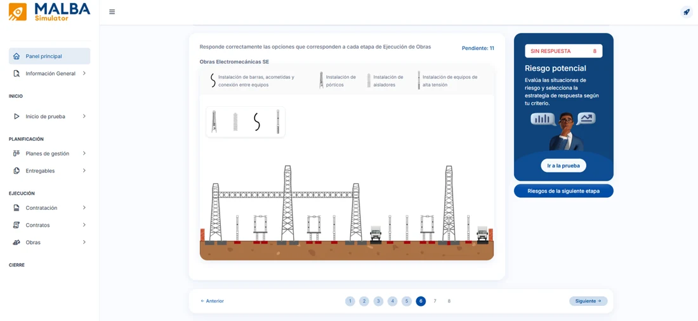
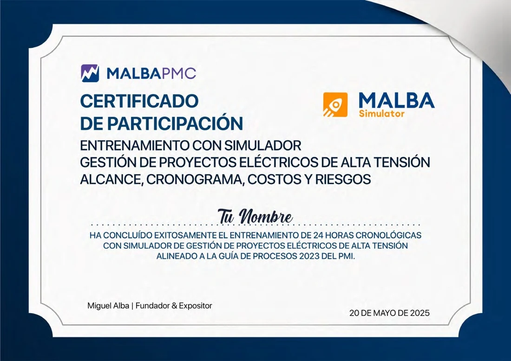

Dirección estratégica
Comprenderás el proyecto, su ciclo de vida, el entorno y el rol del Director de Proyectos para generar valor desde el inicio.
Formamos directores de proyecto capaces de liderar proyectos de infraestructura eléctrica mediante una formación práctica, estratégica y basada en experiencias reales.
Aprenderás a dirigir proyectos de transmisión eléctrica con una visión estratégica, integrando interesados, alcance, cronograma, costos, riesgos y control del desempeño.
Comprenderás el proyecto, su ciclo de vida, el entorno y el rol del Director de Proyectos para generar valor desde el inicio.
Identificarás, analizarás y comprometerás a los actores clave para alinear expectativas y asegurar su apoyo.
Definirás el alcance y organizarás los entregables mediante una estructura clara, completa y orientada a resultados.
Desarrollarás un cronograma ejecutable considerando lógica constructiva, dependencias, recursos y restricciones.
Construirás la línea base integrando alcance, cronograma y presupuesto para gestionar eficazmente el desempeño.
Desarrollarás una visión preventiva para identificar y estructurar los riesgos que pueden afectar los objetivos.
Priorizarás los riesgos y diseñarás respuestas efectivas para reducir su impacto y proteger el proyecto.
Medirás objetivamente el avance físico y económico para tomar decisiones oportunas y maximizar el valor.
Integrarás todos los conocimientos y herramientas para presentar y defender la estrategia completa del proyecto.
Desliza para explorar todos los contenidos
Nueve sesiones para dirigir proyectos de transmisión con una visión estratégica e integrada.
Comprender el proyecto, su ciclo de vida, el entorno y el rol del Director de Proyectos para generar valor desde el inicio.
Identificar, analizar y comprometer a los actores clave para alinear expectativas y asegurar su apoyo a lo largo del proyecto.
Definir el alcance y organizar los entregables mediante una estructura clara y completa.
Desarrollar un cronograma ejecutable considerando lógica constructiva, dependencias, recursos y restricciones.
Construir la línea base integrando alcance, tiempo y presupuesto para una gestión efectiva del desempeño.
Desarrollar una visión preventiva mediante la identificación y estructuración de los riesgos que pueden afectar los objetivos.
Priorizar los riesgos y diseñar respuestas efectivas para reducir su impacto y proteger los objetivos del proyecto.
Medir objetivamente el avance físico y económico para tomar decisiones oportunas y maximizar el valor.
Integrar todos los conocimientos y herramientas para presentar y defender la estrategia completa de dirección del proyecto.
El sector necesita profesionales capaces de desarrollar proyectos más rápido, con mayor eficiencia y menor exposición al riesgo.
Ingeniero Electricista · MBA · PMP® · RMP®
Especialista en gestión de proyectos con amplia experiencia liderando proyectos de transmisión eléctrica de alta tensión.
Una metodología práctica que combina conceptos, herramientas, simulación y toma de decisiones.
Conceptos clave y buenas prácticas de gestión aplicadas a transmisión eléctrica.
Aplicación con herramientas profesionales mediante talleres dirigidos.
Decisiones estratégicas en el Simulador MALBA durante cada fase.
Evaluación de resultados, indicadores y lecciones aprendidas.
Ajuste de planes y estrategias para optimizar el desempeño del proyecto.
Consolidación del plan de gestión con una visión integral del proyecto.
Desliza para explorar todos los contenidos
Practica la toma de decisiones en escenarios realistas de transmisión eléctrica antes de enfrentarlos en un proyecto real.

Al finalizar, habrás desarrollado competencias clave para liderar proyectos de transmisión eléctrica de manera estratégica, integrada y efectiva.
Comprenderás el contexto del negocio, el ciclo de vida y tu rol como director de proyectos.
Sabrás identificar, analizar y comprometer a los interesados clave para alinear expectativas.
Diseñarás la estructura del proyecto y gestionarás los entregables de forma clara y efectiva.
Elaborarás cronogramas realistas considerando lógica constructiva, recursos y restricciones.
Integrarás alcance, cronograma y costos para construir una línea base sólida y confiable.
Identificarás, analizarás y priorizarás riesgos, diseñando respuestas para proteger los objetivos.
Aplicarás Ruta Crítica y Cadena Crítica para gestionar el plazo con enfoque en resultados.
Aplicarás Valor Ganado y otros indicadores para monitorear, controlar y prever resultados.
Tomarás decisiones oportunas basadas en datos, evaluando alternativas y gestionando incertidumbre.
Aplicarás lo aprendido en un taller integrador con un caso realista de transmisión eléctrica.

Al aprobar el programa, recibirás un certificado emitido por MALBA PMC que acredita tu formación especializada en dirección de proyectos de transmisión eléctrica.
Certificación incluida junto con materiales, plantillas y acceso al simulador.
Una formación aplicada, respaldada por experiencia real y recursos listos para usar.
Experiencia real liderando proyectos de transmisión en Perú y Latinoamérica.
Casos, ejercicios, plantillas y herramientas aplicables desde el primer día.
Entrenamiento de decisiones en un entorno interactivo y realista.
Recursos editables listos para utilizar en tus proyectos.
Revisa y refuerza el contenido cuando lo necesites.
Comprobante electrónico incluido en tu inscripción.
Fortalece tu capacidad para planificar, integrar, controlar riesgos y tomar mejores decisiones en proyectos de infraestructura eléctrica.